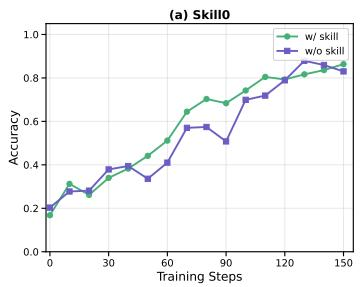
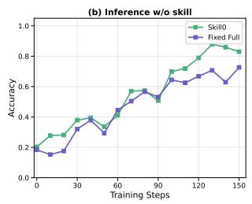

cat figure_1.png
Augmentation vs. Internalization
Skill augmentation pays a token tax on every step and depends on noisy retrieval. SKILL0 moves that knowledge inside the weights.


Agent skills are usually injected at inference time — costing tokens, adding retrieval noise, and never truly learned. SKILL0 flips this: it internalizes skills into model parameters through a decaying-context RL curriculum, so the agent runs fully zero-shot, with no runtime skill retrieval.
SKILL0 delivers substantial improvements while operating zero-shot at inference time.
Three stages: group skills offline, train the agent loop with compact visual skill context, then dynamically withdraw that context until it is no longer needed.

Skills are grouped offline by category and rendered together with interaction history into a compact visual context — keeping token overhead low while teaching tool invocation and multi-turn task completion.
A skill-enhanced agent loop runs under RL: training begins with full skill context, giving the policy maximal procedural guidance before it must internalize that knowledge.
Each skill file is scored for on-policy helpfulness. Only files the current policy still benefits from are retained, within a linearly decaying budget \(M\), until the agent runs fully zero-shot — no runtime retrieval.
Throughout RL optimization, SKILL0 maintains consistently higher reward curves on both the 3B and 7B backbones compared to the AgentOCR baseline (see Figures 3 & 4 below).
Success rate (%) with per-step context token cost (k). SKILL0 leads while keeping token cost near the cheapest baselines.
| Method | ALFWorld Avg↑ | Cost (k) | Search-QA Avg↑ | Cost (k) |
|---|---|---|---|---|
| Qwen2.5-(VL)-3B-Instruct | ||||
| Zero-Shot | 15.2 | 1.21 | 15.9 | 0.48 |
| Few-Shot | 29.3 | 2.30 | 17.9 | 0.86 |
| Zero-Shot⋆ | 17.6 | 0.48 | 12.7 | 0.15 |
| Few-Shot⋆† | 23.8 | 0.88 | 14.6 | 0.36 |
| GRPO | 79.9 | 1.02 | 36.4 | 0.61 |
| AgentOCR⋆ | 78.2 | 0.38 | 34.2 | 0.26 |
| EvolveR | 44.1 | 1.89 | 38.2 | 1.00 |
| SkillRL† | 82.4 | 2.21 | 38.9 | 0.87 |
| SKILL0⋆ | 87.9 | 0.38 | 40.8 | 0.18 |
| Qwen2.5-(VL)-7B-Instruct | ||||
| Zero-Shot | 31.3 | 1.08 | 17.5 | 0.70 |
| Few-Shot | 48.4 | 2.12 | 20.1 | 0.97 |
| Zero-Shot⋆ | 21.1 | 0.52 | 14.0 | 0.26 |
| Few-Shot⋆† | 28.9 | 1.79 | 17.3 | 0.41 |
| GRPO | 81.8 | 0.95 | 41.9 | 0.73 |
| AgentOCR⋆ | 81.2 | 0.43 | 40.1 | 0.36 |
| EvolveR | 43.8 | 1.00 | 43.1 | 1.00 |
| SkillRL† | 89.9 | — | 47.1 | — |
| SKILL0⋆ | 89.8 | 0.41 | 44.4 | 0.34 |
// SKILL0⋆ tops ALFWorld (87.9 @ 3B) at the lowest token cost (0.38k) — matching SkillRL's quality without its 2.21k-token skill overhead.
| Method | Infer w/ Skills | 3B Score↑ | 3B Acc↑ | 3B Tokens↓ | 7B Score↑ | 7B Acc↑ | 7B Tokens↓ |
|---|---|---|---|---|---|---|---|
| Baselines | |||||||
| Zero-Shot | — | 23.4 | 6.3 | 0.46k | 26.8 | 7.8 | 0.48k |
| Few-Shot | ✓ | 45.8 | 18.4 | 0.78k | 51.2 | 24.2 | 0.91k |
| AgentOCR | — | 75.2 | 56.3 | 0.42k | 78.6 | 59.3 | 0.40k |
| Ours: RL w/ Skills | |||||||
| SKILL0 (w/ skills) | ✓ | 80.9 | 64.1 | 0.94k | 85.3 | 71.9 | 0.89k |
| SKILL0 (zero-shot) | — | 78.6 | 66.4 | 0.49k | 85.1 | 74.2 | 0.46k |
// On WebShop, zero-shot SKILL0 reaches 74.2% accuracy @ 7B at 0.46k tokens — near-identical to its skill-augmented self at roughly half the token cost.
| Dynamic Skill Curriculum (ALFWorld) | w/ S | w/o S | Δ |
|---|---|---|---|
| Filter & Rank & Select | 86.3 | 87.9 | ↑1.6 |
| w/o Filter | 81.6 | 78.9 | ↓2.7 |
| w/o Rank (Random Select) | 76.6 | 62.9 | ↓13.7 |
// Ablating the ranking step is catastrophic (−13.7 w/o skills) — confirming that on-policy helpfulness ranking is what makes internalization survive context withdrawal.
Reward curves stay above AgentOCR throughout RL, and validation tracks the gradual withdrawal of skill context.





How the decaying skill budget \(M\) behaves over training and at inference.


@article{paperskill0,
title = {SKILL0: In-Context Agentic Reinforcement Learning for Skill Internalization},
author = {Unknown},
journal = {arXiv preprint},
year = {}
}